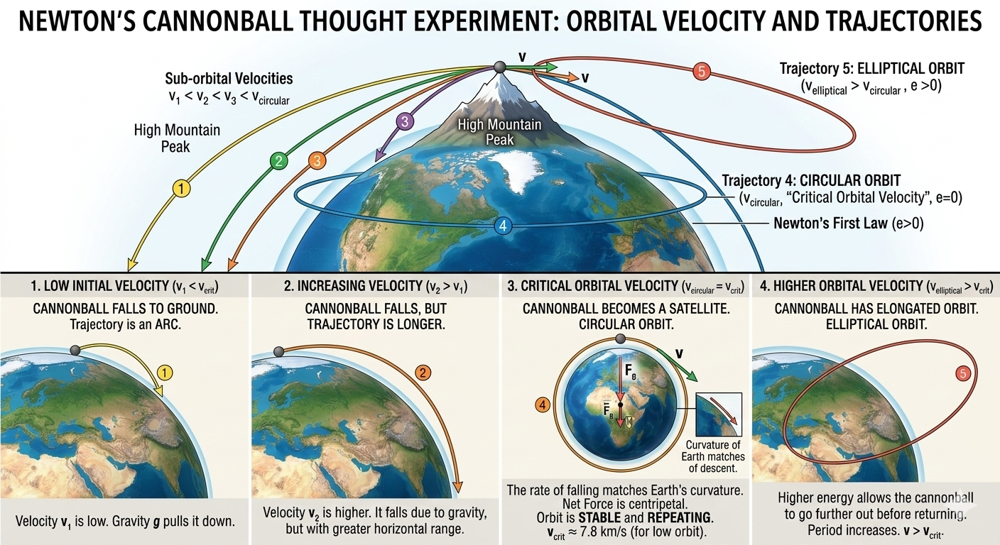
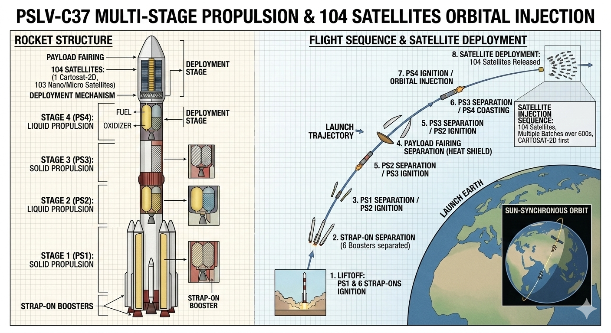
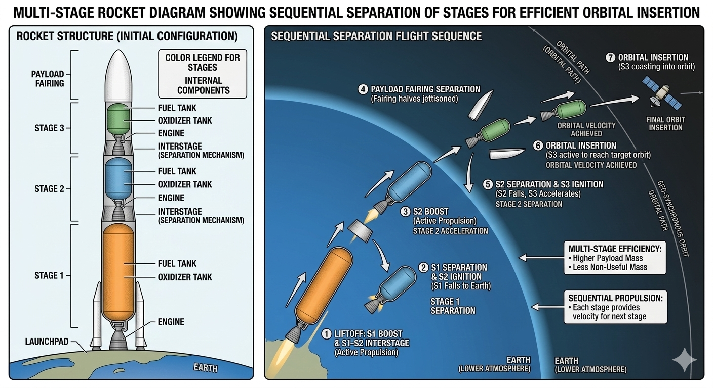

Universal Law of Gravitation
Every particle in the universe attracts every other particle with a force directly proportional to the product of their masses and inversely proportional to the square of the distance between their centres.
\[ F = G \frac{m_1 m_2}{r^2} \]
where \( G = 6.67430 \times 10^{-11} \, \text{N·m}^2\text{kg}^{-2} \) (universal gravitational constant).
This inverse-square law explains planetary motion, tides, and satellite orbits. It is the foundation of all classical gravitational physics.

Orbital Mechanics & Kepler’s Laws
For a satellite in circular orbit, gravitational force provides the centripetal force:
\[ G \frac{M m}{r^2} = m \frac{v^2}{r} \implies v = \sqrt{\frac{GM}{r}} \]
Orbital period \( T = 2\pi \sqrt{\frac{r^3}{GM}} \) (Kepler’s 3rd law).
Kepler’s laws describe elliptical orbits with the central body at one focus. In zero-drag environments (above atmosphere), these orbits are stable forever.
Escape Velocity – Breaking Free from Gravity
The minimum speed required to escape a planet’s gravitational pull without further propulsion is given by energy conservation (total mechanical energy = 0 at infinity):
\[ v_{\text{esc}} = \sqrt{\frac{2GM}{R}} = \sqrt{2gR} \]
For Earth: \( v_{\text{esc}} \approx 11.2 \, \text{km/s} \) (≈ 40,000 km/h).
Mathematical Breakdown: Reaching Exactly 1324.5 km in Zero-Drag Environment
Consider a projectile launched vertically from Earth’s surface in a zero-drag environment (ideal space). We want the maximum (apogee) altitude to be exactly \( h = 1324.5 \) km.
Earth radius \( R = 6371 \) km = \( 6.371 \times 10^6 \) m
Final distance from centre \( r = R + h = 7695.5 \) km = \( 7.6955 \times 10^6 \) m
Conservation of mechanical energy (initial KE + PE = final PE at apogee where velocity = 0):
\[ \frac{1}{2}mv^2 - \frac{GMm}{R} = -\frac{GMm}{r} \]
\[ \frac{1}{2}v^2 = GM\left( \frac{1}{R} - \frac{1}{r} \right) \]
\[ v = \sqrt{2GM\left( \frac{1}{R} - \frac{1}{r} \right)} \]
Using \( GM = 3.986 \times 10^{14} \) m³/s²:
\[ v \approx 9.87 \, \text{km/s} \]
Result: Launch at 9.87 km/s vertically → apogee exactly 1324.5 km. Beyond this speed the object would never return (escape velocity is 11.2 km/s).
Kinetic Energy of a System of Particles (1.27 m/s Example)
Total kinetic energy of a system is the scalar sum of individual kinetic energies (no vector cancellation):
\[ K_{\text{total}} = \sum_{i=1}^{N} \frac{1}{2} m_i v_i^2 \]
Consider 250 particles, each of mass 2 kg, moving at exactly 1.27 m/s (random directions, zero-drag space environment):
\[ K_{\text{per particle}} = \frac{1}{2} \times 2 \times (1.27)^2 = 1.6129 \, \text{J} \]
\[ K_{\text{total}} = 250 \times 1.6129 = 403.225 \, \text{J} \]
This illustrates why even tiny velocities contribute significantly when scaled (rocket exhaust particles, asteroid debris, etc.).
Real-World Physics: Staging & Propulsion of PSLV & GSLV


PSLV (Polar Satellite Launch Vehicle) – 4 stages:
Stage 1: Solid propellant (boost thrust)
Stage 2: Liquid (Vikas engine)
Stage 3: Solid
Stage 4: Liquid (precision orbit insertion)
Payload to LEO: up to 1,750 kg. Used for 104-satellite record launch.
PSLV
- 4 stages (solid-liquid-solid-liquid)
- Core + 6 strap-on boosters
- Excellent for polar/sun-synchronous orbits
- Proven reliability: 58+ successful missions
GSLV
- 3 stages with cryogenic upper stage
- Liquid core + solid boosters
- Designed for heavier GTO payloads (up to 4,000 kg)
- Cryogenic engine (LOX/LH₂) gives higher specific impulse (~450 s)
The key physics: each stage discards dead mass after burnout, increasing effective exhaust velocity and allowing the rocket equation \( \Delta v = v_e \ln(m_0/m_f) \) to achieve orbital velocity (≈7.8 km/s) from rest.